Basic Help
- Content
- 1. Introduction
- 2. Сonfiguration files
- 3. Interface
-
- 3.1. Menu bar
-
- 3.1.1. "Files"
- 3.1.2. "Mark"
- 3.1.3. "Commands"
- 3.1.4. "Tabs"
- 3.1.5. "Show"
- 3.1.6. "Configuration"
- 3.1.7. "Help"
- 3.2. Button toolbar
- 3.3. Drives button bar
- 3.4. Drives list
- 3.5. Tabs bar
- 3.6. Current directory bar
- 3.7. Tabstop headers bar
- 3.8. Status bar
- 3.9. Terminal window
- 3.10. Command line
- 3.11. Function key buttons bar
Double Commander — is a project started by Russian programmer Alexander Koblov (Alexx2000@mail.ru), as a fork of Sexi Commander (author — Radek Cervinka, radek.cervinka@centrum.cz).
Double Commander is a cross-platform (both GNU/Linux and Windows) file manager, supporting WCX, WFX, WDX, WLX and DSX plugin types. The last type (DSX) is DC's own search plugin type. The Windows version of Double Commander is compatible with many plugins from Total Commander (TC), which is more than half of those which I tried. The Linux version has no such programs at all. DC comes installed with some WCX (archiver) plugins to work with cpio, deb, rpm, bz2, rar, zip, tar, gz, tgz archives as directories (VFS), also a search plugin (DSX) and a lister videoplayer plugin for Linux (WLX). Other plugins can be installed manually.
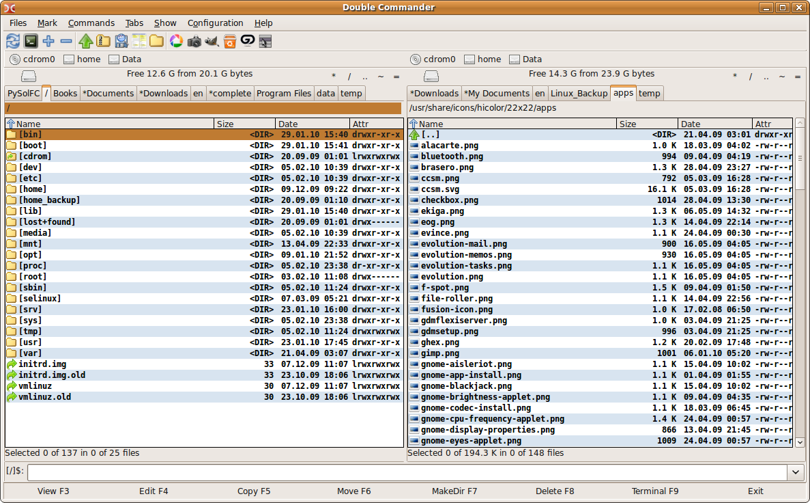
1. Introduction
On the program download page you can see several versions which are available to download. First, you must choose which operating system (Windows or Linux) and whether 32 or 64 bit. After that you can select the type of distribution. For Windows there is an executable file .ехе or an archive .zip (which is the so-called portable version).
For Linux there are versions for most popular Linux distributions and desktop environments. You can download compiled deb packages for Debian-based distributions (e.g, Ubuntu), and rpm for Linux Mandriva. Also available is a portable version of the archive tar.bz2, it is the same source from which you can build the program yourself. For various DE there are versions, based on GTK2 toolkit, and versions for KDE, based on Qt. I must note that the program is not yet available from the repositories.
On the first launch Double Commander will automatically detect the system language, and set it for the interface. DC is translated into 10 languages so far. The language can be changed in the menu via "Configuration → Options → Language". Also Double Commander determines and uses the current system theme. It looks like this (in Ubuntu Linux, default theme):
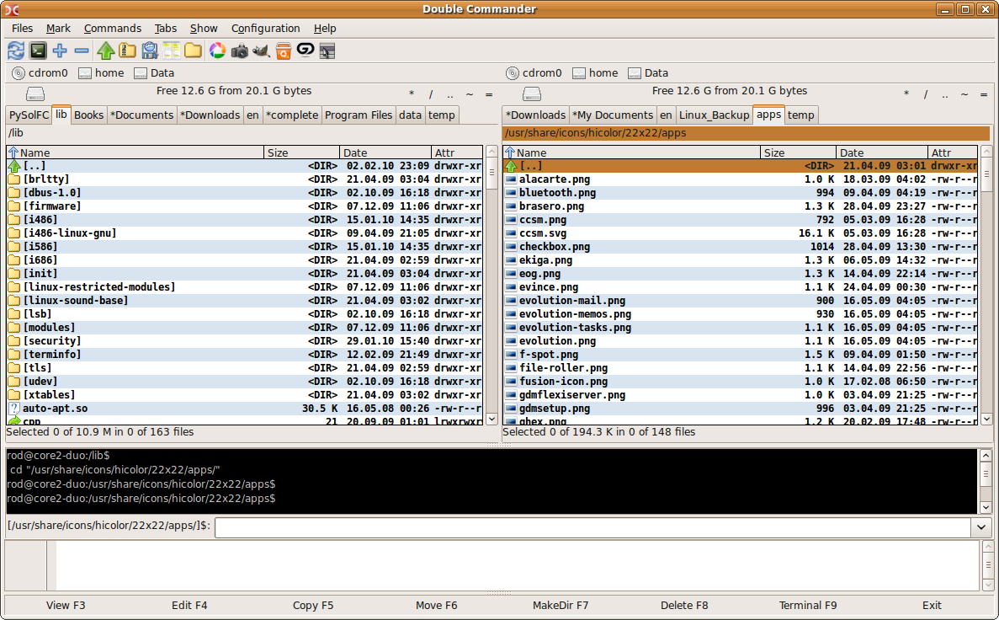
As can be seen from the figure, there are two file panels, a black terminal window, a command line (as in TC) and a lower window that is a log viewer (it shows all the actions from the file manager).
2. Сonfiguration files
Double Commander keeps settings in configuration files in the program directory or in the user's home directory. The main files are:
doublecmd.ini — all the main program settings (similar to wincmd.ini)
default.bar — toolbar settings (like TC)
editor.col — editor settings
shortcuts.ini — keyboard layout settings
cmdhistory.txt — command line history
dirhistory.txt — directories history
edithistory.txt — edit files history (using F4)
maskhistory.txt — the history of masks used to search, highlight, etc.
doublecmd.log — log of all operations
doublecmd.ext.example — sample file associations configuration
The structure of these files are described in detail in their topics. Almost all the settings in these files can be changed from the program GUI.
3. Interface
Double Commander's interface
3.1. Menu bar

The Menu Bar provides access to all the features of Double Commander. But do not forget that the majority of actions can be performed in other ways: by using hot keys or buttons on the toolbar.
3.1.1. "Files"
This menu contains almost all the actions that can be made on files. Please consider all the items:
Create link (internal command cm_HardLink). With this item, Double Commander creates a hard link to the file under the cursor, and places it in a folder, open on the adjacent panel.
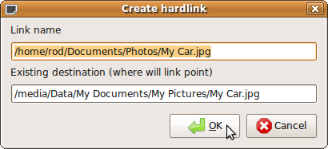
Link name — here is the path to the link and its name. The name is the last word after the last slash in the line.
Existing destination — the object, on which the link is created.
Create symlink (internal command cm_SymLink). All like the hard link above, but link is symbolic.
Selecting Show file properties... (internal command cm_FileProperties) we get a window like this:
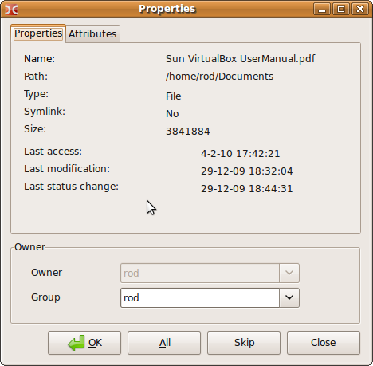 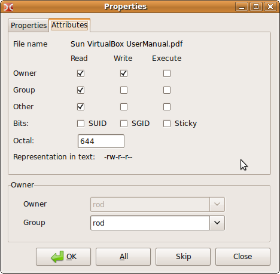
which indicates the file or folder name, size, write and last access time, and also owner and group. On the "Properties" tab you can change the access to the file (if you have the rights to do so). But only for a file or folder under the cursor.
Using item Edit comment... (internal command cm_cm_EditComment) you can create or change comments in UTF, ISO, KOI or ANSI encodings.
Calculate Occupied Space (internal command cm_CalculateSpace) item calculates the size of selected objects in rounded units and in bytes.

Compare by Contents (internal command cm_CompareContents) shows a window with two panels with the files to compare (usually text).
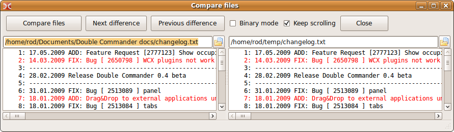
Compare files — starts the process of comparing files. Different lines are highlighted in red by default. You can choose any files. Also there is vertical and horizontal scrolling available.
Next difference — step to next different lines.
Previous difference — step to previous different lines.
Binary mode — result is presented in binary form.
Keep scrolling — allows synchronize scrolling.
Close — closes comparison window.
Multi Rename Tool (internal command cm_MultiRename)

Allows renaming any files by defined mask. E.g. some files with different names could be renamed into Picture1, Picture2, Picture3, etc.. First, select files to be renamed and then start this tool (see figure above). There you can see the old and new names for your files.
On the panel Mask you can set mask to rename. The following macros are available:
[N] — is the same name as the source file
[Nx] — get x-characters from original name. E.g. if the source file is named "Picture" value [N5] would mean that the character "u" (fifth character in the original name) would be used
[Nx:x] — get characters from x to x. E.g. if the source file is named "Picture" value [N1:4] would mean "Pict" is used
[C] — is a counter, its parameters are listed on the Counter panel.
You can combine the use of macros, and your own text (see figure).
Using the spinner box to the right of the File Name you can choose from the following:
No change — the new names will be same case as the old ones.
UPPERCASE — the new names will be all uppercase.
lowercase — the new names will be all lowercase.
First char uppercase — the new file names will begin with a capital character.
First Char Of Every Word Uppercase — each word of the new file names will begin with a capital character.
Likewise for the Extension name as well.
Panel Find & Replace will help when you need to replace parts of the file name (e.g. change "a" to "i", so the word changes from "race" to "rice"). Regular expressions are also available.
In the panel Counter set the parameters of the counter: first number, number width (1, 01, 001, 0001, etc..), interval.
In the panel Log Result you can enable a log file and specify the path to it.
In the panel Presets you can save all your MultiRename settings for future use. Just type a name into the box and click the Save button.
If you click on the Reset all button the configuration of the MultiRename tool will be set back to the initial settings. Handy if you want to start all over again ;-).
Finally, when you are satisfied you have the new filenames as you want, click on the Rename button to actually perform the file renaming.
By selecting item Pack files (internal command cm_PackFiles) we call a standard dialog to pack files to the zip, tar.gz, tgz and, possibly, rar archive formats.
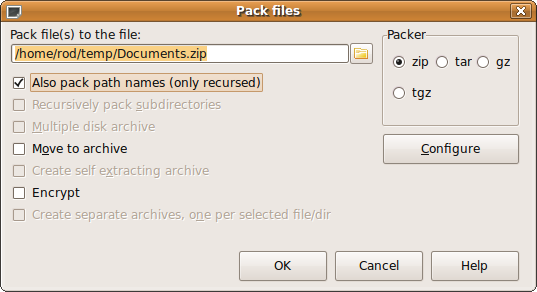
Also we can unpack files via Extract Files (internal command cm_ExtractFiles). The same dialog is called when you copy files from the archive.
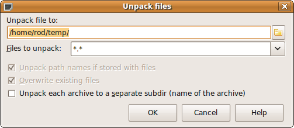
The first line specifies the destination directory (where the archive will be unpacked). It can be changed manually or by clicking on the browse button at the far right. In the Files to unpack line, you can specify a mask, determining which files will be unpacked. The history of masks can be found in the drop-down list. Checkbox Unpack each archive to a separate subdir (name of the archive) creates a folder in the destination with the same name as the archive and extracts the files into that folder. You can extract several archives at once with this option and each will be extracted into its own folder in the destination.
Items Split file and Combine files (internal commands cm_FileSpliter and cm_FileLinker)
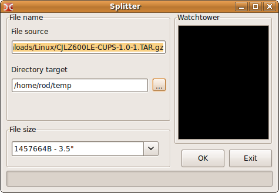
File source — specifies a file to split.
Directory target — specifies destination folder for the split files
File size — select size of split parts. You can also enter your own value. Presets are:
1457664B — 3.5" — Floppy drive 3.5
98078KB - ZIP 100MB — ZIP drive
650MB - CD 650MB — CD drive size
700MB - CD 700MB — CD drive size
On click OK button you get several files with the extension ".split" in the target directory. To combine the file again, select all ".split" parts and click Combine files(cm_FileLinker). You also need to specify the order of split parts to combine.
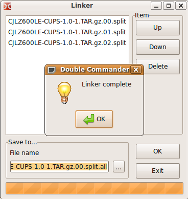
This function is very useful, if you have small drives and large files. It is possible to move the file parts (as in TC).
Item Calculate check sum... (internal command cm_CheckSumCalc) is used to calculate the checksum (MD5 and SHA1) to check files integrity.
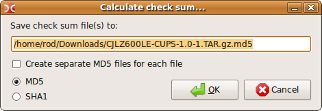
Save check sum file(s) to: — line specifies name and path to the calculated checksum.
Create separate MD5 files for each file — if checksum calculates for multiple files, this option allows you to create separate MD5 files for each target file.
MD5 and SHA1 — select algorithm which will calculate checksums.
3.1.2."Mark"
There are some commands in this group with which you can select files in different ways.
First and second items Select a group and Unselect a group (internal commands cm_MarkPlus and cm_MarkMinus). These commands select groups of files by a mask. With this mask you can specify file names or extensions.
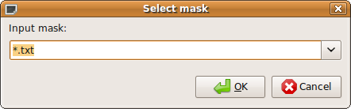
E.g. select all files that have the extension .png. Also there is a drop down list with masks history.
Third and fourth items Select all (internal command cm_MarkMarkAll) and Unselect all (internal command cm_MarkUnmarkAll). They make it possible to select or unselect all items from the panel quickly.
Fifth item is Invert selections (internal command cm_MarkInvert). It makes currently selected files unselected and vice versa.
Sixth and seventh items Select all with same extension (internal command cm_MarkCurrentExtension) and Unselect all with same extension (internal command cm_UnmarkCurrentExtension). These functions help to select and unselect files with the same extension as the file under the cursor.
Eighth and ninth items Copy Filename(s) to Clipboard (internal command cm_CopyNamesToClip) and Copy Filename(s) with Full Path (internal command cm_CopyFullNamesToClip). First command copies the selected file list to the clipboard, second copies too, but with full file paths.
3.1.3. "Commands"
First item is Search (internal command cm_Search).
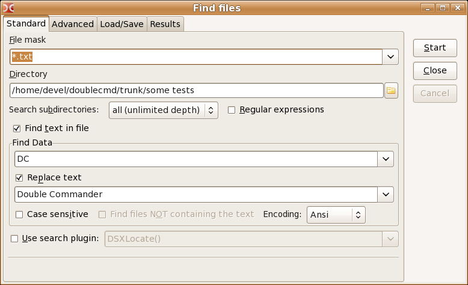
Line File mask set the mask to search.
Next line Directory specifies directory to start search, default is "/".
Search subdirectories can have:
current dir only
select number of levels (from 1 to 100)
all (unlimited depth)
This setting controls search depth of the filesystem tree. Set to "current dir only", we will search only in specified "Directory" (not any subdirs).
Also you can use regular expressions.
If checkbox Find text in file is enabled, process will search for text, specified in line Find Data in the files. You can also replace this text with any other text, specified in line Replace text by enabling the checkbox.
Case sensitive — indicates that capital letters should be distinguished from lowercase, e.g. "Fallout" and "fallout" would be different.
Find files NOT containing the text, displays files, which do not have the text specified at the Find Data field. Also you can set encoding here (UTF, ISO, KOI, DOS, ANSI etc..).
Use search plugin: Use Locate plugin to make the search.
At the bottom of the window is a field in which search results are displayed, and a few buttons.
Tab Advanced allows to specify additional conditions: Date (from .. to), Time (from .. to), Size (from .. to), also attributes and file age.
Tab Load/Save allows you to save search parameters so they can be re-used at a later time.
Tab Results contains results of the search.
View — opens selected file with viewer (F3).
New search — clear old results and allow to re-search (perhaps with new conditions).
Go to file — closes search window and sets cursor on selected file in the panel.
Feed to listbox — gives a list of files with full paths in the file panel.
You can switch between the tabs with Alt+1...Alt+4 keys combinations.
Second item is Directory hotlist (internal command cm_DirHotList). This command is the same as pressing the "*" button.
Selecting this item we get a popup menu, in which we can choose: add the currently selected directory as a new bookmark or configure existing bookmarks.

Configure — opens a dialog to manage bookmarks.

Add — opens a dialog to add a new bookmark.
Delete — deletes the selected bookmark.
Add manually — you can enter the path of a new bookmark from the keyboard.
Edit — edit added bookmark (also see settings at section [Configuration] of doublecmd.ini, HotDir= all bookmarks, separated by commas).
Third item is Run Term (internal command cm_RunTerm) — opens a terminal at the current directory (settings at Run terminal).
Fourth item is Open VFS list (virtual file system) used by the plugins (WFX, WCX, etc), that need their own filesystems. If you add and configure the relevant plugins, the command will open the list, providing an opportunity to work with them.
Fifth item Swap Panels (internal command cm_Exchange), swaps left and right panels.
Sixth item is Target = Source (internal command cm_TargetEqualSource) — opens the same directory in the inactive panel. This command is the same as pressing "=".
Seventh item is Show occupied space — calculates and shows the total size of all files in the sub-folders of the current folder. The <DIR> text in the Size column of the active panel is replaced with the total.
3.1.4. "Tabs"
This group manages the tabbed file panels.
First item is New Tab (internal command cm_NewTab) — adds a new tab to the panel and selects it.
Second item is Open folder in new tab (internal command cm_OpenDirInNewTab) — opens a new tab for the directory under the cursor, but does not select it.
Third item is Remove tab (internal command cm_RemoveTab) — closes the active tab and switches the panel to the next tab (or the previous tab, if you close the last tab).
Fourth item is Remove all tabs (internal command cm_RemoveAllTabs) — closes all inactive tabs. If they consist of locked tabs, it will prompt for confirmation.
Fifth item Locked, but directory changes allowed (internal command cm_ToggleLockDcaTab) — if you lock a tab with this method, you can change to another directory within this tab, but after switching to another tab (or DC is restarted) the tab will revert to the locked tabs original directory.
Sixth item is Lock this tab (internal command cm_ToggleLockTab) — makes the tab locked, trying to change to another directory within this tab will simply open a new tab.
Seventh and eighth items are Switch to next tab (internal command cm_NextTab) and Switch to previous tab (internal command cm_PrevTab) — respectively switches to the tab on the right (next) and to the tab on the left (previous).
3.1.5. "Show"
Manages the displayed contents of the file panels.
The first five items: Sort by name (internal command cm_SortByName), Sort by extension (internal command cm_SortByExt), Sort by size (internal command cm_SortBySize), Sort by date (internal command cm_SortByDate), Sort by attrib (internal command cm_SortByAttr) — allows you to choose different sorting orders for the files. Also you can click the left mouse button on the column headers to change the sort order.
Sixth item is Reverse order (internal command cm_ReverseOrder) — invert the sort order for the active panel.
Seventh item is Refresh (internal command cm_Refresh) — makes Double Commander refresh the panels.
Eighth item is Show hidden/system files (internal command cm_ShowSysFiles) controls the display of hidden files and directories. In Linux these are "dotted" files. Same as the setting in the configuration — Show hidden/system files.
3.1.6. "Configuration"
First item is Options (internal command cm_Options), it opens the "Options" window. Here you can set almost all of the options in Double Commander!!! Please inspect all sections of this window.
First section is Language. These are the various translations available for Double Commander. You can choose your preferred language.
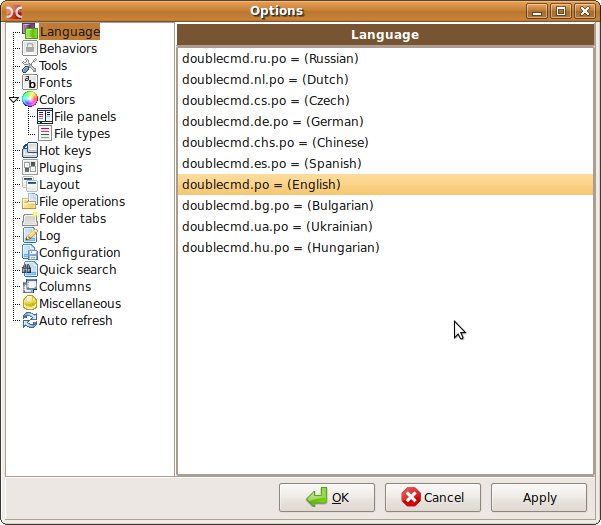
Next section is Behaviors

Line Run in terminal: The default setting is xterm -e sh -c. But you can change it to gnome-terminal -e sh -c, if you are using Gnome. Also, you can set any other program here. Note, that keys -e sh -c are needed for launching console programs from Double Commander (Shift+Enter by default).
Run terminal — program that will run on pressing F9 or command Run terminal (other programs, not just terminal programs can be run from here).
Select directory with keypad Obsolete. Not working.
Lynx like movement — right arrow opens directory or runs a program under cursor, left arrow opens parent directory.
Case sensitive sorting —if this option is enabled, files/folders will be sorted thus: Filenames starting with [A-Z] will appear before filenames starting with [a-z], e.g.: "Zilog.txt" will appear before "anacron.txt".
Short Filesize format — file sizes will be rounded before display in column "Size" variously: Kb, Mb, Gb, Tb, etc. If this option is unselected the sizes will appear in bytes.
Move icon to system tray when minimized — When minimized Double Commander will display its icon in the system tray rather than the panel (or Windows taskbar).
Date and time format — can vary from "day.month.year" to "day.month.year hour:minute:second". Date will be displayed at column Date on panels.
Cut text to column width — sometimes column text can overlap into other columns. This option truncates any extra text at the column boundary.
Show hidden/system files — to display "dotted" files (in Linux). This can also can be changed from the main menu.
Show icons, Icons Size — to display the icons of files and folders on the file panels. Three sizes are available: 16x16, 22x22 and 32x32 pixels.
Selection by mouse, Mode — ability to select and unselect files and folders with the mouse. Mode is set for left button or right button.
Scrolling — ability to use mouse wheel to list files at panels.
Line by line with cursor movement — cursor will move up or down the panel before scrolling takes place.
Line by line — the cursor remains on the file and scrolling takes place immediately.
Page by page — the same as previous, but scrolling is by pages rather than by lines (much faster scrolling).
Drive black list — use this to hide certain drives in the drives panel menu bar. Each item must contain the full path to the drive/mount point. Separate multiple drives with semicolons ";". Examples: /media/cdrom;/mnt/win_c (Linux) a:\;b:\;d:\ (Windows).
Section Tools. You can specify external programs for edit (F4), view (F3) and find differences. These external programs will be used instead of the internal tools.
Section Fonts
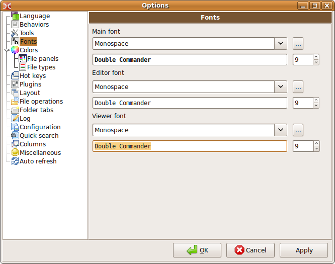
You can select fonts for the editor (F4), viewer (F3) and main font for the program, and also their size. The bottom line for each allows you to see how the display of the selected font looks. One important note: the fonts for the editor and viewer must be MONOSPACE. The figure below illustrates a proportionally spaced font in the window above (notice the strange spacing) and a monospace font in the window below which appears correctly spaced. Also, with some proportional fonts the characters may overwrite each other and look quite strange.

Normal (proportional) font above, monospaced below.
Section Colors, File panels
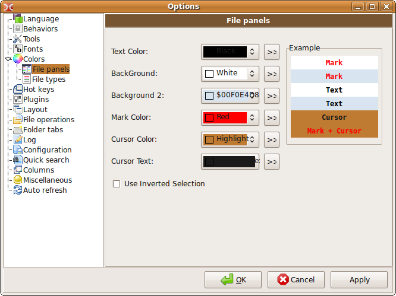
The color settings here are global settings for both panels. These settings can be overridden by creating a customised column style which can have its own color settings, and more, for each tab in the panel! See Columns for details on how to do this. You must adjust the current style of the columns (there are two default column sytles: Default and Brief) or create your own style and apply it for any tab.
Here you can choose colors that will be used to process the file panels: Text Color, Background, Background2, Mark color, Cursor Color, and also Cursor Text. With the two background options you can make an alternating stripe in the panels. I've done this myself as can be seen in the panel screenshots.
Use Inverted Selection — inverts colors of marked text and marked text under cursor. More details about color settings are in section Columns.
Section Colors, File types
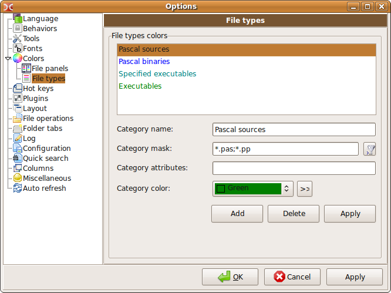
Here you can specify file types that should be given a different color.
In line Category name you may write a description of the file, what it does or what program it opens.
In line Category mask put a wildcard mask to match file types. You may put multiple file types here using a semicolon ";" without spaces between them. Symbol "*" means match any number of characters.
In line Category attributes you can put file attributes, and DC will match any files which have matching attributes. Set attributes this way: drwxrwxrwx (Linux) drahs (Windows). You can also use wildcards in the attributes: ?r-* (Linux) or ?r* (Windows) will find all read-only files and folders.
Do not forget to click "Apply" button after customization.
Section Hot Keys

In this section you can set keys to launch commands and also specify parameters for these commands.
Categories — shows the category of hot key combinations. Main - the main category (apparently there will be other categories in future).
Commands — list of available shortcuts in Double Commander. The list is shown as a table with three columns:
Commands (names of internal commands)
Comments (a short description)
Hotkeys (assigned shortcuts)
Filter — enables you to search the internal commands more quickly.
Hot Key — new shortcut displays here. Click in the box and press combination on keyboard to enter new hot key.
Hot Keys — this box shows assigned shortcuts for the selected command. Also will display a warning if you try to set a shortcut that is already assigned.
Param — allows you to set some parameters for the command.
Set HotKey — sets the new shortcut. It will be moved from "Hot Key" to "Hot Keys" box. Also it will be added to the third column of "Commands" table.
Clear HotKey — clears existing shortcut from "Hot Keys" box.
E.g. to reassign drive popup menu from Alt+F1 and Alt+F2 to Ctrl+F1 and Ctrl+F2 (in Linux) you must select command cm_RightOpenDrives, click in the "Hot Key" box and press Ctrl+F2. Then press "Set HotKey" button. Perform the same steps for command cm_LeftOpenDrives and shortcut Ctrl+F1.
Section Plugins Information will be added later...
Section Layout
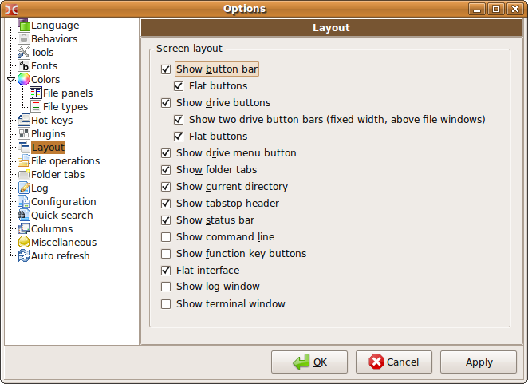
You can change the layout of the main window here. I suppose, all the available options are explained on the screenshot above (Layout). The screenshot below illustrates what DC looks like with all the layout options unselected.
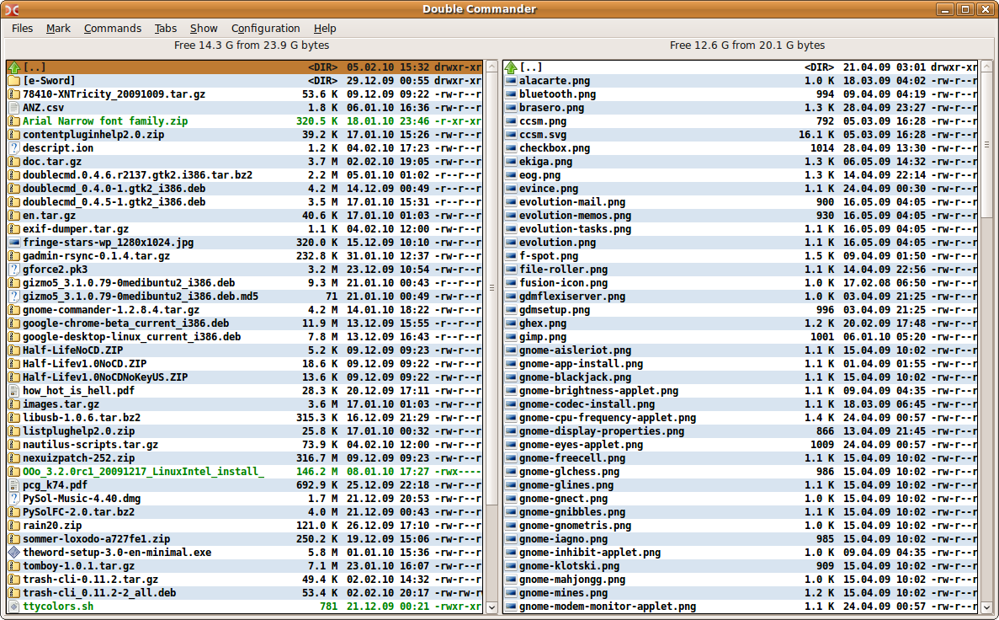
Section File operations
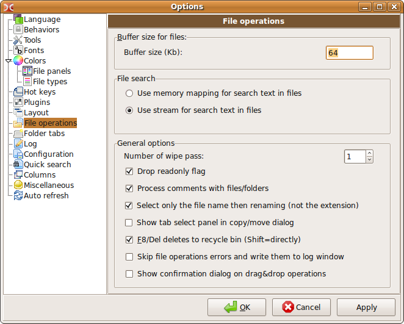
Buffer Size (Kb) — sets the memory buffer size for file operations.
Use memory mapping for search text in files. — copies the file into virtual memory before performing the search. It's faster, but needs a more powerful computer.
Use stream for search in text files — splits file into parts, then the search begins (slower, but fewer resources are required).
Number of wipe pass (internal command cm_Wipe) — this function is for the complete destruction of files from your hard disk (shortcut Alt+Del by default). Erasing uses several overwrites of the file. Here you can specify the number of rewrites.
Drop readonly flag — if enabled, Double Commander will drop this flag in Windows, and add "w" attribute in Linux. This is handy if copying files from CD/DVD media where the files would retain the read-only attribute by default.
Process comments with files/folders — If enabled and you have a file/folder with a comment attached and you copy or move it to another folder the comment will be copied or moved to the destination along with the file/folder.
Select only the name when renaming (not the extension) — Selects only the filename part before the "." on renaming.
Show tab select in copy/move dialog — If a panel has more than one tab, on copy/move you can choose the destination tab.
 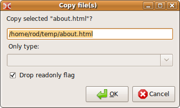
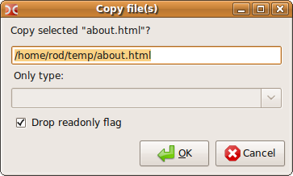
Skip file operations errors and write them to log window — If a file operation error should occur the error message will appear in the log window below the panels rather than appearing in a popup dialog.
Show confirmation dialog on drag&drop operations — If selected, when you drag files/folders across to the other panel a popup dialog will ask to confirm your action.
Section Folder tabs
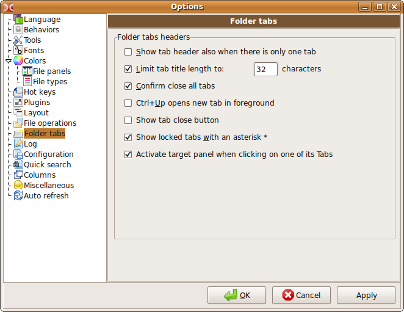
Show tab header also when there is only one tab — If this option is disabled and there is only one tab on the panel, a tab header won't appear (usually this is more visually attractive).
Limit tab title length to — Tabs with long names will be limited to this length and the displayed name will be truncated if longer than this value.
Confirm close all tabs — If selected and a Remove all tabs command is executed this option will prompt for confirmation that you wish to remove all inactive tabs.
Ctrl+Up opens new tab in foreground — Doesn't seem to be working yet.
Show tab close button — If selected, a small "x" button will appear on tabs allowing you to click on it to close them.
Show locked tabs with an asterisk * — to distinguish between locked and unlocked tabs. Locked tabs will be marked by *.

Tab My Documents is locked here, and tabs imgDC and temp are not locked.
Activate target panel when clicking on one of its Tabs — if enabled, when you click the mouse on a tab on the other panel, the focus will automatically be transferred to it (it will become the active panel). Also the cursor position will be retained when switching between panels this way.
Section Log
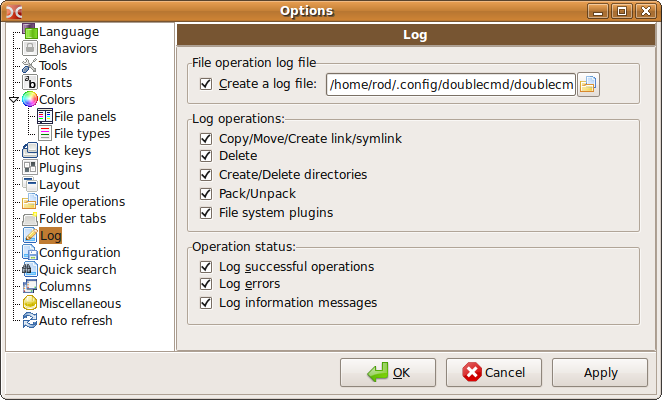
Here you can choose the filename to log Double Commander's operations. Also you can choose which operations will be logged.
Section Configuration
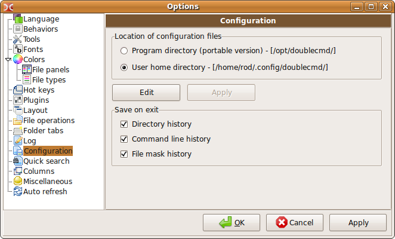
Here you can choose where to store all configuration files.
Edit — button to enable editing the doublecmd.ini configuration file manually.
You can also customize which history items to log in Double Commander. These logs are useful to quickly facilitate navigation.
Directory history — saves the history of all visited directories.
Command line history — saves the history of commands that were entered at the command line.
File mask history — helps you remember which files you have already searched for and generally what the mask files you used were.
Section Quick search
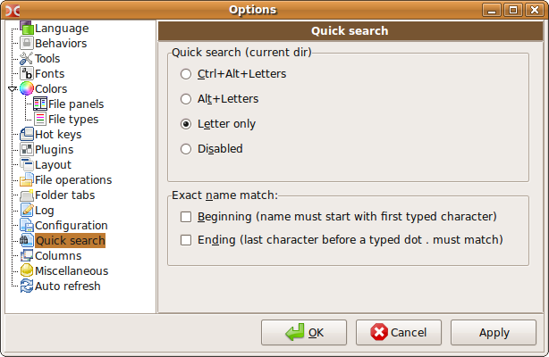
Quick search is used in searching for filenames in the panel. Here you can set a keyboard shortcut for it, and also set some parameters.
Exact name match: Beginning — means that the file to be searched for must begin with the first letter typed.
Exact name match: Ending — it helps, if you know only end of filename, e.g. ...us.ext, so you can find this file using the mask *us.ext.
I like to have the Exact name match: Beginning selected and then I can just type the first character of the filename I'm looking for and then the second character, etc. The file is quickly located in this manner.
Section Columns
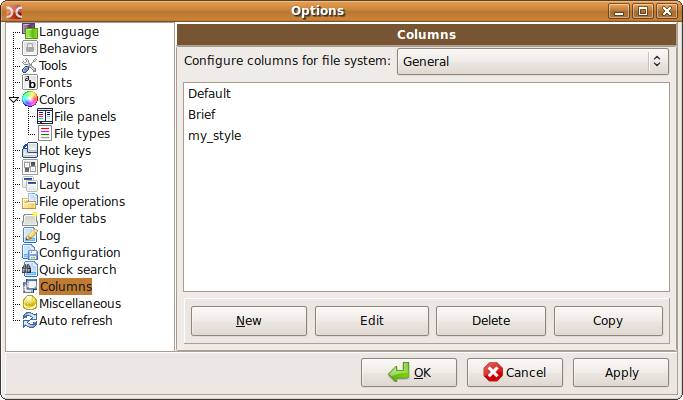
In this section you can customize the panel appearance, columns, colors, fonts, etc. Double Commander is very configurable in this way.
Configure columns for the file system — if any installed WFX-plugins have a file system that differs from standard FS, this option allows you to create a set of styles especially for this file system.
Main windows displays a list of existing column styles. There are two default styles: Default and Brief (in this screenshot you can also see my column style called "my_style").
New — creates a new column set. It opens the columns editor window, where you can enter a name and also customise your new style.
Delete — deletes selected columns set.
Copy — copies columns set. The new set is named the same as the target set + _Copy added. It is a good idea to create some different sets from one parent.
Edit — opens columns editor window.
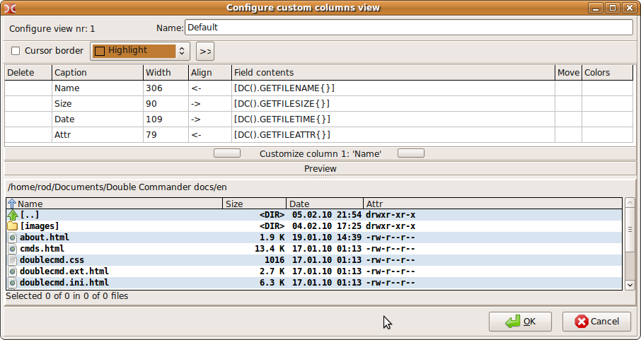
Configure view nr: 1 Name — the name of the column set. The number of the set is ordered in the list at Columns.
Cursor border — it is possible to have a custom color of the cursor border or disable it.
Customization table — allows you to set the number, name, content, place and size of columns.
Customize column 1: 'Name' — the buttons here choose which column to edit. It will also expand fonts and colors customization pane.
Preview — allows you to see the new style on the panel before applying it.
Here is the customization table
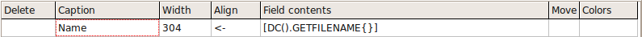
The count of lines in the customization table is equal to the count of columns in the set.
These are the parameters that determine the table for the column (click in the boxes to edit them):
Delete — allows you to remove any line. To delete: click in the Delete box of the line. Then click again, this time a delete symbol appears. If you click a third time the line will be deleted from the table.
Caption — specifies the name of the column which will be displayed in the tabstop headers bar. You can set any name you like.
Width — column width (pixels) which will be set on program start. Note: the width depends on the column content, e.g. the file extension column will have a small width.
Align — sets the alignment of the column name. Variants are:
(<--) align left
(-->) align right
( = ) align middle
Field contents — sets the basic content of the column. You can select from the following variants:
GETFILENAME — file name and extension (text.txt).
GETFILENAMENOEXT — file name and no extension (text).
GETFILEEXT — file extension (from the dot to the end, e.g. .txt or .example).
GETFILESIZE — file or directory size. The appearance will depend on the option chosen at section Behaviors.
GETFILETIME — file or directory date. The appearance will depend on the option chosen at section Behaviors.
GETFILEATTR — file or directory attributes.
GETFILEPATH — path to the current item. Uses: usually, for search results.
GETFILEGROUP — displays the group of the file.
GETFILEOWNER — displays the owner of the file.
GETFILELINKTO — displays the path and file (if they exist), that is, what is linked with this symlink.
Move — allows you to move lines (which equates to reordering the columns). Click twice in the Move box and you will see a type of spinner appear, clicking on the upper part moves the line up (column moves left).
Colors — lets you customize the column's color and font. Individual columns can have different colors. The window to edit the colors you can see below.
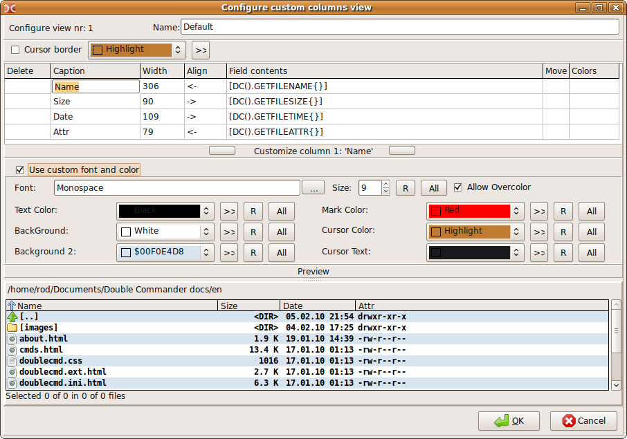
To get this pane you must click on one of the buttons on either side of the Customize column 1: 'Name' line.
Font — you can choose the font for this column. To use the system fonts list, click the button " ... " to the right.
Size — you can set the font size here.
R — Restores the default font settings.
All — Applies the settings to all the other columns.
Allow Overcolor — this option enables the ability to display the names of files in a different color (selected in the section Colors, File types).
It is possible to choose a color for the following elements: Text Color, Background, Background 2, Mark Color, Cursor Color, Cursor Text.
Something about color
There are 22 preset colors. There is a nice ability to set system theme color settings. So, the program appearance will change depending on the system themes. Also, textures from system themes can be used for column sets.
>> — button for choosing some color from the palette.
R — Restores default settings from the section Colors, File types.
All — Applies the settings to all the other columns.
Example using system columns for DC (right panel).

Example using independent settings for columns.

Example using textures.
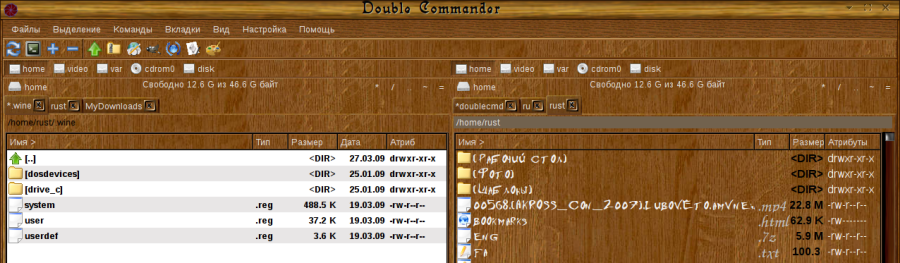
Section Miscellaneous

Vertical lines — enables vertical grid lines in the panels.
Horizontal lines — enables horizontal grid lines in the panels.
The screenshots below illustrate this subtle grid effect. The screenshot on the left has the vertical and horizontal lines enabled and the screenshot on the right does not.
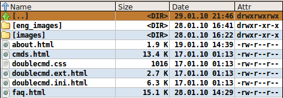

Show warning messages ("Ok" button only) — shows warning messages if enabled.
When selecting files with SPACEBAR, move down to next file — moves the cursor down on selection with SPACEBAR. Default keys are Shift+Down or Shift+Up.
Show square brackets around directories — helps to visually distinguish directories from files when icons are disabled.
Section Auto refresh
Allows Double Commander to refresh panels automatically, same as the Ctrl+R manual refresh command does.
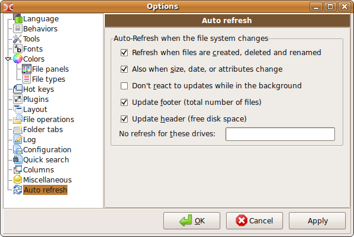
There are some options in this section:
Refresh when files are created, deleted, and renamed.
Also when size, date or attributes change.
Don't react to updates while in the background — if Double Commander's window is minimized or in the background, auto refresh will not occur.
Update footer (total number of files) — updates the status line also, not just the panels.
Update header (free disk space).
No refresh for these drives — you can set disk(s) that will be disabled for auto refresh. Specify full path, values separated by semicolons ";" without spaces (e.g. /home;/media/cdrom).
Item File associations (internal command cm_FileAssoc)
This item opens the configuration file associations. All association sets are contained in the file doublecmd.ext. An association sets example, called doublecmd.ext.example, is in the program directory.
Here you can customize file associations and set commands or scripts for some file types. Commands will be displayed in the context menu (internal command cm_ContextMenu) by right mouse clicking on a file in the panel.
File types — contains a list of extensions. Each group can contain many file extensions, and such a group can be associated with various programs.
Add — adds a new group. You must enter a group name, e.g. Sound.
Remove — deletes a group.
Rename — allows you to set a new name for the group.

Extensions — here you can set the extensions for the selected group, e.g. mp3, wma, ogg etc.
Add — adds an extension to the group.
Remove — deletes an extension from the group.
Actions — here you can set commands for the group.
Add — adds an action to the list.
Remove — deletes an action from the list.
Up, Down — moves the action. The actions (if more than one) can be reordered.
Action: — sets type of action. Variants:
From popup menu
Open — action will be run after pressing Enter or double click.
View — action will be run after pressing (F3).
Edit — action will be run after pressing (F4).
Other actions displayed at subsection "Commands".
Command — any command from Desktop Environment, where you can set macro commands (right button). Macros are case sensitive!:
{!VFS} — use virtual file system for archives
{!EDITOR} — call editor (internal or external, depends on the configuration)
{!VIEWER} — call viewer (internal or external, depends on the configuration)
{!SHELL} — use a terminal to run the program
<?command?> — runs 'command' in the system shell and feeds the output to the next command
%f — file name
%d — directory
%p — full path (directory + file name)
Examples:
Top — totem '%p' — opens the file with totem media player.
Bottom — genisoimage -o %p.iso -r -J %p — creates an ISO image from directory (only for directories).
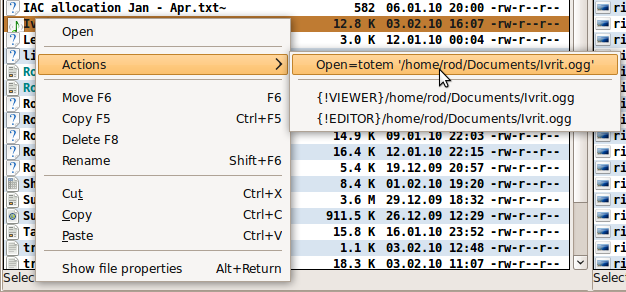

To allow Double Commander to take some actions with directories, you must create a group (e.g. Dir) and set extension folder. All available actions will be displayed in the menu 'Commands' in the context menu. E.g. how to open a directory with root privileges in Ubuntu: set action Open as root, command gksu nautilus '%p'.
Icon — you can set the path to an icon for this group.
3.1.7. "Help"
Here you can get help information (this documentation) and information about the program:
Contents — opens help index page
Keyboard — opens keyboard shortcuts page
Visit Double Commander Web page — go to project homepage if you are online
About — shows information about the program version and the developers
3.2 Button toolbar
This provides an alternative way to call internal commands and external programs by using buttons (with popup hints).
To edit the Button Toolbar panel just click right mouse button on it and choose item Edit.
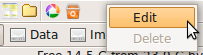
"Change button bar" window
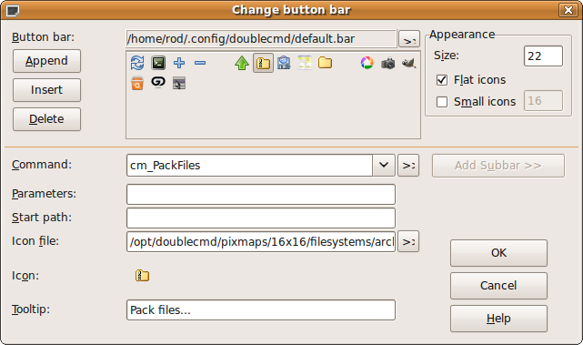
The first line shows where Double Commander keeps its settings for the button bar (as in TC). Below this you can see the added buttons.
Append — adds a new empty button to the bar.
Delete — deletes the button.
Size — sets the size of the buttons. Better sizes are 16, 22 or 32, but you can set any size (in pixels).
Flat icons — makes the buttons look like icons.
Command — here you can set any internal command or specify any other command.
Parameters — sets parameter(s) for the command.
Start path — the full path to the command (if necessary).
Icon file — sets the path to the button icon.
Icon — previews the button icon.
Tooltip — hint description (tooltip) for the button on the bar.

To create a splitter between the buttons, set a new button with Tooltip = "-" (minus). Just leave the other options blank.
Also there is an ability to create a drop-down menu:
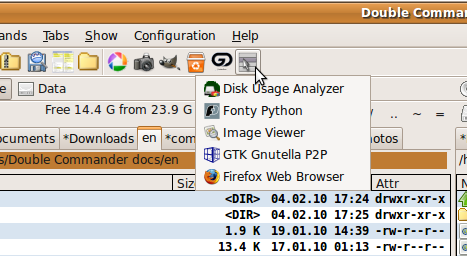
Set Command to cm_ShowButtonMenu, and specify another .bar file with a suitable menu as Parameters. See the 'default.bar' file located in: ~/.config/doublecmd/ (Linux) C:\Documents and Settings\[user name]\Application Data\doublecmd\ (Windows) for details of the menu structure. Here you can see the 'my.bar' file specified as the drop-down menu file:
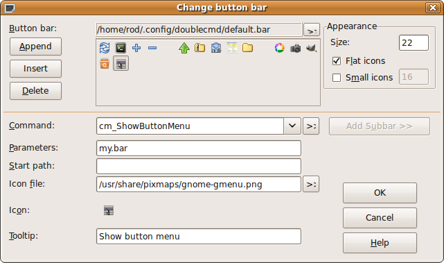
3.3. Drives button bar
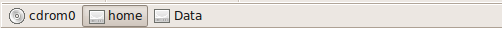
The Drives button bar helps you to change the drive quickly with one mouse click. Right click shows the context menu that contains operations such as mount/unmount, format, etc. (depends on the OS and drive type).
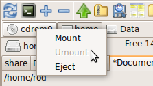
3.4. Drives list
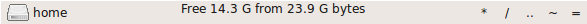
Helps to change drive, also contains additional information: size, free space and navigation buttons— « * / .. ~ = ».
Internal commands are cm_LeftOpenDrives for left panel and cm_RightOpenDrives — for right panel. Default shortcuts: (Alt+F1 and Alt+F2) but they won't work in most Linux Desktop Environments.
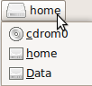
Additional navigation buttons:
«/» — go to the file system root
«..» — go to the parent directory
«*» — shows the bookmarks hotlist. See section Directory hotlist for details.
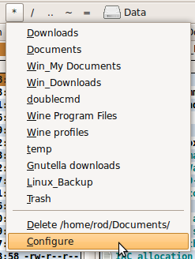
«~» — go to your home directory
«=» — see command Target = Source (Alt+Z by default).
3.5. Tabs bar

Display tabs. Click on tabs with left mouse or you can use the keyboard to navigate tabs (Ctrl+Tab and Ctrl+Shift+Tab by default). Locked tabs are marked with an asterisk (if Show locked tabs with an asterisk * is enabled).
3.6. Current directory bar
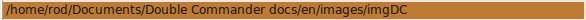
Displays the name of the current directory. A left mouse click on this directory bar drops down a directories history (internal command cm_DirHistory) which allows you to quickly navigate back to previous directories.
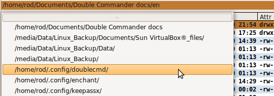
A right mouse click on the directory bar will allow you to copy the pathname to the clipboard or enter a new path manually.
It is now also possible to click on parts of the directory bar to quickly navigate back in the directory structure. Very handy if you want to go to a parent directory back many levels. This is known as a "breadcrumb" navigation feature.
3.7. Tabstop headers bar
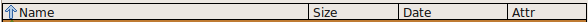
Shows the column names. On left click sorts files by column. On right click shows a menu to change and edit custom column style set.
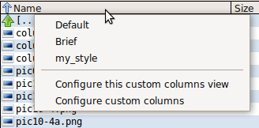
Default, Brief, my_style — existing styles
Configure this custom columns view — opens column set customization window. See here.
Configure custom columns — opens Columns section.
3.8. Status bar
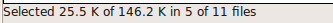
Shows size of selected items of the total size and also shows total items selected of total items in the panel.
3.10. Command line
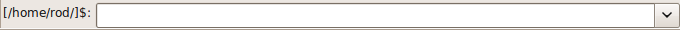
Use to enter commands manually. Path to active directory shows in line beginning (/home/rod/ in screenshot). Right button opens history of commands.
On right click context menu displays:
 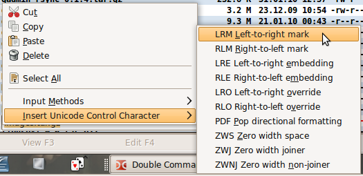
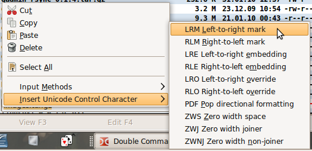
that contains standard commands Cut, Copy, Paste, Delete, Select All, and also submenus Input Methods and Insert Unicode Control Character.
3.11. Function key buttons bar
Displays F3 - F9 hotkeys. Enables you to select commands with a mouse click.
Created by Rustem (dok_rust@bk.ru)
English version by Rod J (rodmac_shiels@hotmail.com)